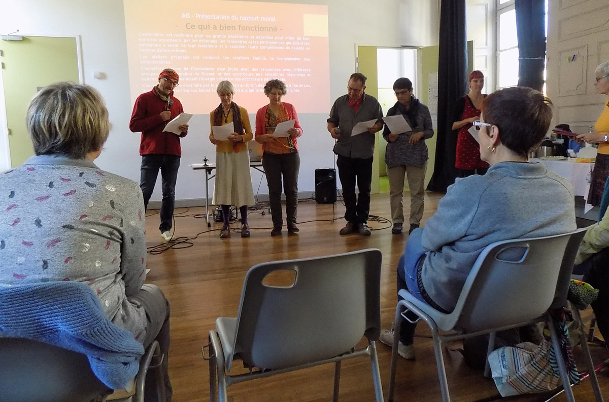
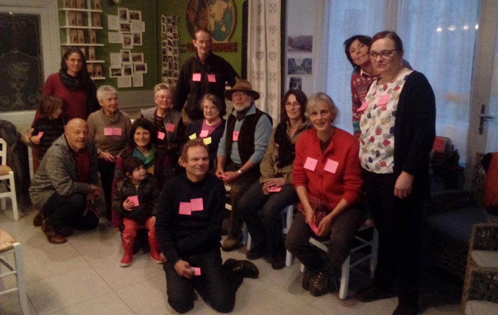
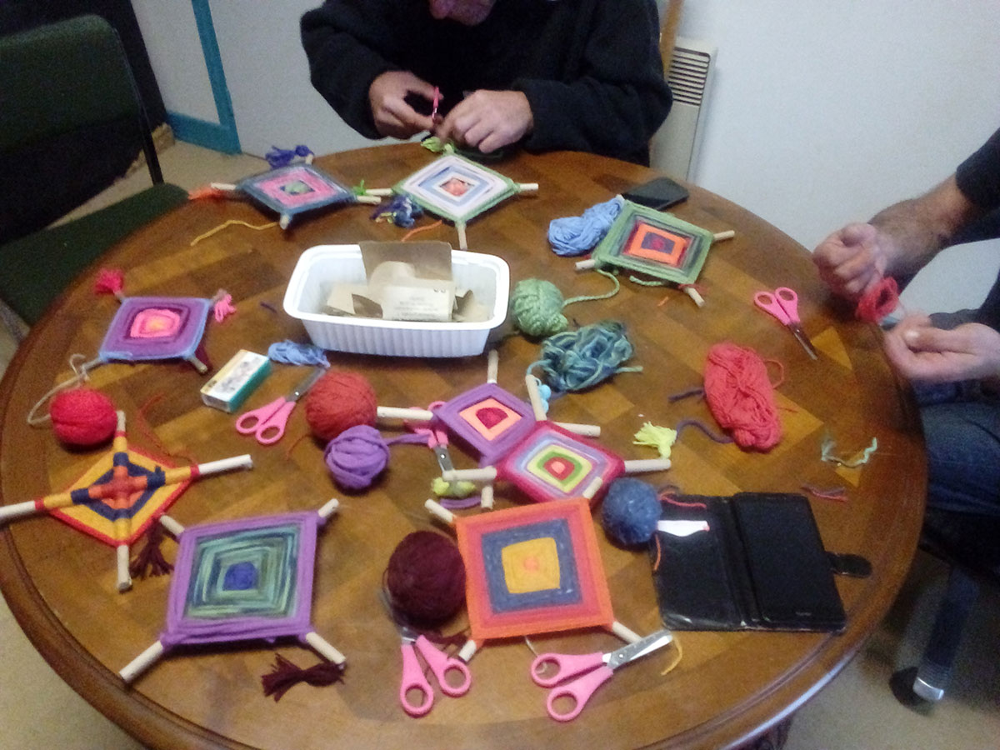
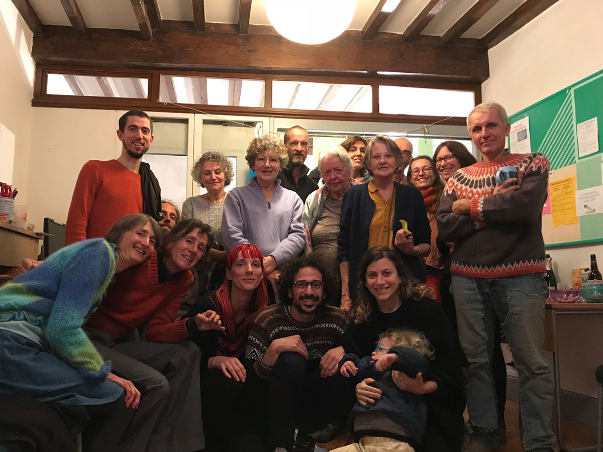
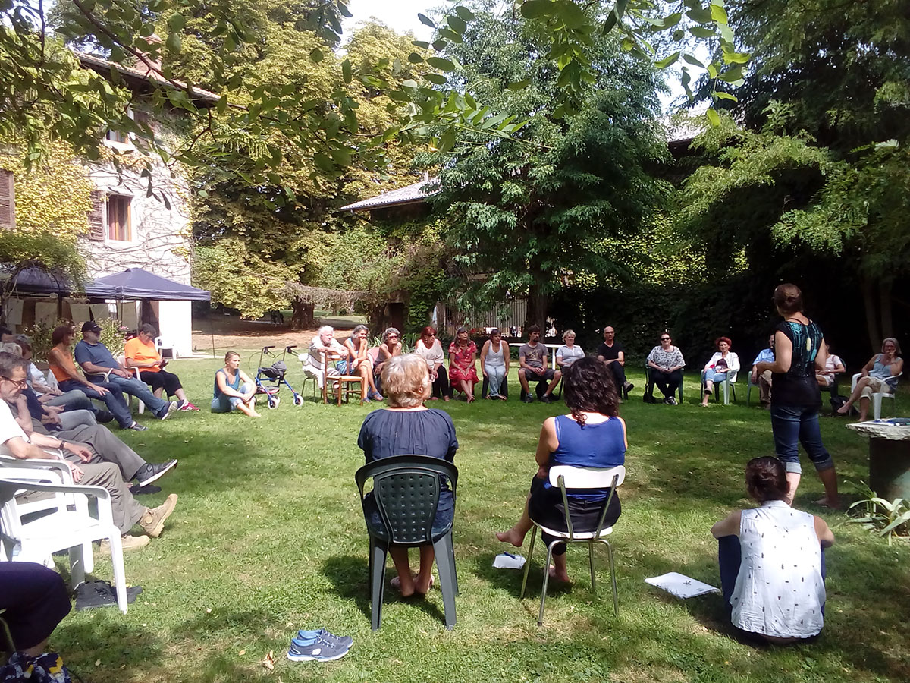

Grâce à l'Accorderie, mon ordinateur a retrouvé une nouvelle jeunesse. Il est reparti pour 10 ans.
J'ai rencontré des Accordeurs de talent. L'entraide à l'Accorderie du Diois est essentiel sur notre territoire
Les ateliers organisés par les Accordeurs du Diois sont riches en rencontres !
Les dernières actus

30 avril 2020 | Par Accorderie
Retour sur l'Assemblé Générale du 26 octobre 2019
This is a wider card with supporting text below as a natural lead-in to additional content. This content is a little bit longer...
Lire la suite

20 avril 2020 | Par Doreen
Première rencontre des Accordeures de Châtillon et communes environnantes
16 Accordeur·euse·s sont venus à cette rencontre exceptionnelle au Café des Deux Mondes le 11 mars à 17h30. La neige a empêché les Accordeurs de Boulc et Glandage de venir, mais plusieurs sont venus de Saint Roman et Menglon....
Lire la suite
12 avril 2020 | Par Stéphanie
Rencontre régionale du 9 février à Romans
Après Sardieu, les Accorderies du Sud-est se sont retrouvées à Romans sur Isère ce 9 février. Xavier et Yves représentaient notre Accorderie. C'est un moment précieux pour retrouver et échanger avec d'autres membres actifs de ce grand territoire...
Lire la suite

12 avril 2020 | Par Doreen
Matinée à Aire Trésor
La matinée du 6 novembre, l’Accorderie s’est déplacée à Aire Trésor. Après une petite présentation de notre association aux salariés de la structure, Stéphanie a animé un atelier de peinture gouache et Odile un atelier de création d’un objet décoratif mexicain, appelé "Œil de Dieu"...
Lire la suite

9 avril 2020 | Par Stéphanie
Un apéro des nouveaux... jeune et joyeux !
Cet apéro du 28 novembre ce caractérise par sa jeunesse : une petite dizaine d’accordeur de l’excellent cru 2018 et une grosse dizaine vieux d’un an à quatre ans. Et je ne parle pas des enfants présents...
Lire la suite9 avril 2020 | Par Doreen
Nouvelle liste de diffusion pour le groupe local de Die
Mise en place d’une liste de diffusion pour que tous/toutes les accordeur.e.s qui souhaitent suivre ce groupe puissent les contacter et recevoir leurs nouvelles en utilsant une seule adresse...
Lire la suite

8 avril 2020 | Par Joël
Rencontre régionale à Sardieu
Les Accorderies du sud-est se sont retrouvées à Sardieu les 7, 8 et 9 septembre dans une grande maison mise à disposition par la salariée d’Annonay. Nous y sommes rendus à 3 : Yves, Joël et Doreen...
Lire la suite
6 avril 2020 | Par Doreen
Une nuit à la belle étoile
Le lundi 6 août malgré un risque d'orage la nuit à la belle étoile a bien eu lieu. Nous étions 8 accordeur.e.s et petits enfants d'accordeure, prêt.e.s à tenter l'aventure. Nous sommes monté.e.s sur le plateau de Solaure en voiture...
Lire la suite